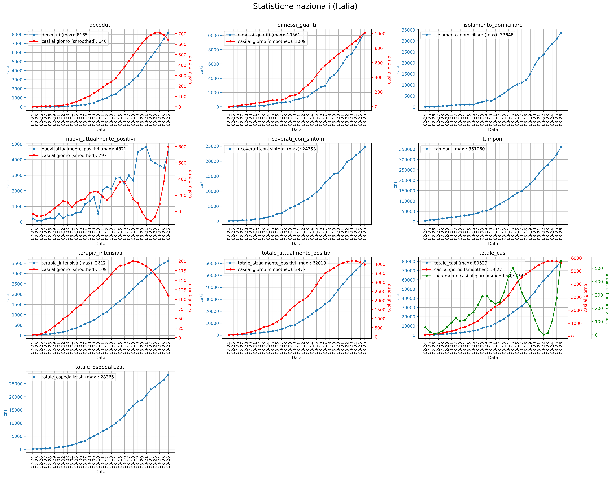

Jupyter notebooks to create diagrams about Covid-19 epidemics in Italy by using the Protezione Civile dataset (https://github.com/pcm-dpc/COVID-19). International data taken from: https://github.com/CSSEGISandData/COVID-19
Here a preview of statistics computed by using the code in this repository:
Italian Statistics: 
Per region statistics:
Per province statistics: